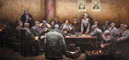

遵义会议

遵义会议是指1935年1月中共中央政治局在贵州遵义 召开的独立自主地解决中国革命问题的一次极其重要的扩大会议。是在红军第五次反“围剿”失败和长征初期严重受挫的情况下，为了纠正博古、王明、李德等人“左”倾领导在军事指挥上的错误而召开的。
这次会议是中国共产党第一次独立自主地运用马克思列宁主义基本原理解决自己的路线、方针和政策方面问题的会议 。这次会议，在极端危急的历史关头，挽救了党，挽救了红军，挽救了中国革命，在中国共产党和红军的历史上，是一个生死攸关的转折点。